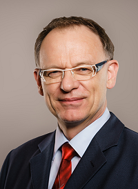

Resumo: A quase totalidade dos criptossistemas de chave pública em uso na atualidade baseia-se na dificuldade de resolver dois problemas computacionais: a fatoração de números inteiros e o cálculo de logaritmos discretos elípticos. O algoritmo quântico desenvolvido por Peter Shor é capaz de resolvê-los com custo comparável ao de sua utilização legítima. Avanços na construção de computadores quânticos sugerem que estes possam tornar-se uma ameaça efetiva nas próximas poucas décadas, motivando esforços de padronização das chamadas alternativas pós-quânticas para esquemas de chave pública, como o processo PQC do NIST e a futura atualização da suíte B da NSA. Nesta palestra, serão abordados o estado da arte na construção de processadores quânticos, os principais esquemas pós-quânticos propostos com suas vantagens, limitações e desafios para uma eventual migração, e o estágio atual do processo de padronização, com ênfase em cenários potenciais de utilização das principais propostas.
Breve biografia: Paulo Barreto é um criptógrafo nascido em Salvador, Bahia, Brasil (1965). Graduou-se em Física em 1987, obteve o grau de Doutor em Engenharia em 2003 e o de Livre-Docente em Engenharia da Computação em 2011, todos pela Universidade de São Paulo. Trabalhou na indústria por 15 anos antes de ingressar no corpo docente da Escola Politécnica da Universidade de São Paulo e mais recentemente na Escola de Engenharia e Tecnologia da Universidade de Washington | Tacoma (EUA). Seus interesses de pesquisa em criptografia são bastante ecléticos e incluem projeto e análise de cifras de bloco e funções de hash, criptossistemas eficientes baseados em curvas elípticas e emparelhamentos bilineares, e criptossistemas pós-quânticos (especialmente baseados em códigos, reticulados, funções de hash e isogenias supersingulares).
Resumo: Despite efforts of the security community, software vulnerabilities are still prevalent, with new vulnerabilities reported daily and older resurfacing. While the community has been taking steps to understand the factors that impact developers’ ability to detect software vulnerabilities, one question remains unanswered: Is the ability to detect vulnerabilities independent of programming language? In this talk we will provide answers to this question by discussing our multi-country study with 109 Java and 193 Python developers working on 18 different vulnerable programming scenarios with different types of vulnerabilities targeting different types of APIs. We looked at ability to detect software vulnerabilities not only from a technical (API type, code length and complexity, programming language), but also from a human factors perspective: developers’ perception of code correctness, familiarity, confidence, professional experience, cognitive function, and personality. Our analysis showed that for both Java and Python: (1) developers’ ability to detect vulnerability was statistically comparable, (2) developers perceive unsafe code with the same level of difficulty, clarity, familiarity, and confidence as safe ones, (3) developers’ expertise and experience did not predict better ability to detect software vulnerabilities. Regarding differences per programming language, we found: (1) only for Python, cognitive status (long-term memory) predicted a better developer ability to detect vulnerabilities in unsafe code, (2) only for Java, personality trait (openness) predicted a better ability to detect vulnerabilities in unsafe code, (3) developers’ ability to understand unsafe code depends on the API type for Java: developers had more difficulty when the vulnerability involved I/O functions, and (4) developers’ ability to detect vulnerability decreases for Java and increases for Python with the increase in code complexity.
Breve biografia: Daniela Seabra Oliveira is an Associate Professor in the Department of lectrical and Computer Engineering at the University of Florida. She received her B.S. and M.S. degrees in Computer Science from the Federal University of Minas Gerais in Brazil. She then earned her Ph.D. in Computer Science from the University of California at Davis. Her main research interest is interdisciplinary computer security, where she employs successful ideas from other fields to make computer systems more secure. Currently, she is particularly interested in understanding and addressing cyber deception and social engineering susceptibility among Internet users. She received the National Science Foundation CAREER Award in 2012 and the 2014 Presidential Early Career Award for Scientists and Engineers (PECASE) from President Obama. She is a National Academy of Sciences Kavli Fellow and a National Academy of Engineers Frontiers of Engineering Symposium Alumni. Her research has been sponsored by National Science Foundation (NSF), Defense Advanced Research Projects Agency (DARPA), MIT Lincoln Laboratory, and Google.
Resumo: As the world adopts Artificial Intelligence, the privacy risks are many. AI can improve our lives, but may leak or misuse our private data. Private AI is based on Homomorphic Encryption (HE), a new encryption paradigm which allows the cloud to operate on private data in encrypted form, without ever decrypting it, enabling private training and private prediction. The security of Homomorphic Encryption is based on hard problems in mathematics involving lattices, a candidate for post-quantum cryptography. Cyclotomic number rings are a good source of the lattices used in practice, which leads to new interesting problems in number theory. This talk will explain Homomorphic Encryption and show demos of HE in action.
Breve biografia: Kristin Lauter is a mathematician and cryptographer whose research areas are number theory, algebraic geometry, and applications to cryptography. She is particularly known for her work on homomorphic encryption, elliptic curve cryptography, and post-quantum cryptography. She is a Principal Researcher and Partner Research Manager of the Cryptography and Privacy Group at Microsoft Research in Redmond, Washington. She served as President of the Association for Women in Mathematics (AWM) from 2015 –2017, and she currently serves on the Board of Trustees for MSRI. She is a Fellow of the American Mathematical Society (AMS), the Society of Industrial and Applied Mathematics (SIAM), and the Association for Women In Mathematics (AWM). She is the 2018-2020 Polya Lecturer for the Mathematical Association of America (MAA). She has published more than 100 papers and holds more than 50 patents.
Essa palestra será apresentada em Inglês
Resumo: The tight relationship between computational trust and IT security has been addressed by different authors in several publications. There were attempts to harmonize both fields, considering them as two sides of the same medal - coined as soft security and hard security, or conversely, as soft trust and hard trust. In the keynote, we will briefly review this past research that concentrates on how trust and security can *complement* each other. We will then focus on more recent efforts hat concentrate on how trust and security can *act in service of* each other. Under the heading "security needs trust", we will investigate how IT security scenarios can be assessed by means of computational trust; under the heading "trust needs security", we will investigate how computational trust assessment can be "secured" against various threats. Research contributions to both fields and open challenges will conclude the talk.

Breve biografia: Max Mühlhäuser is a full professor at Technical University of Darmstadt and head of Telecooperation Lab. He holds key positions in several large collaborative research centers and is leading the Doctoral School on Privacy and Trust for Mobile Users. He and his lab members conduct research on the future Internet, Human Computer Interaction, Intelligent Systems, and Cybersecurity, Privacy & Trust. Max founded and managed industrial research centers, and worked as either professor or visiting professor at universities in Germany, the US, Canada, Australia, France, and Austria. He is a member of acatech, the German Academy of the Technical Sciences. He was and is active in numerous conference program committees, as organizer of several annual conferences, and as a member of editorial boards or a Guest Editor for journals such as ACM IMWUT, ACM ToIT, Pervasive Computing, ACM Multimedia, and Pervasive and Mobile Computing.
Essa palestra será apresentada em Inglês